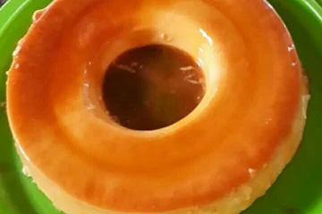

Maria Masterchef
ABOUT MEEE
Como eu havia dito anteriormente, quando eu não estou cansada, gosto de cozinhar, vou mostrar algumas receitas que eu amo!
Torta de frango

Massa:
- 400g de farinha de trigo
- 1 ovo
- 200 g de manteiga gelada
- sal a gosto
- 1 gema para pincelar a massa antes de ir para o forno
Recheio
- 1kg de peito de frango cozido e desfiado
- 2 tomates picados
- 1 lata de palmito picado
- 1 lata de ervilha
- 1 lata de milho
- 1 pacotinho de azeitona picada
- 1 creme de leite
- 1 requeijão
- 5 fatias de queijo para cobrir
- 1 extrato de tomate
- orégano a gosto
MODO DE PREPARO
- MASSA
- - Adicione farinha, manteiga e o ovo e mecha até dar liga, adicione sal aos poucos
- - Deixe a massa descansar e vá fazer o molho
- RECHEIO
- - Cozinhe o frango, após cozinhar, desfie
- - Em uma panela refogue cebola, alho,os tomates, palmito, ervilho, milho, azeitona e o frango desfiado
- - Após estar tudo refogado adicione o creme de leite, meio sache de extrato de tomate, requeijão e sal á gosto e mecha até ficar com a cara boa
- MONTAGEM
- - Deixe o molho esfriando, enquanto isso, pegue uma forma redonda, e vá preenchendo de massa, após preencher de massa, adicione recheio, coloque as camadas de queijo por cima
- - A tampa da torta é a parte que mais tem que ter paciência, eu faço tiras e vou colocando, tipo um quebra cabeça
- - Após fechar, pincelo a gema de ovo, salpico oregano por cima e deixo de 45 minutos à 1 hora no forno em 180º
OBS: Essa receita combina com uma coquinha gelada, molho de alho e ketchup.
Bolo de Cenoura

Massa:
- 1/2 xícara de óleo
- 4 ovos
- 2 e 1/2 xícaras de farinhade trigo
- 2 cenouras médias cortadas
- 1 e 1/2 xícara de açúcar
- 1 colher(sopa) de fermento em pó
Recheio
- 1 colher de sopa de manteiga
- 1 caixa de creme de leite
- 1 caixa de leite condensado
- 3 colheres de chocolate em pó(pode ser toddy/nescau, mas fica mais gostoso com cacau 50%)
MODO DE PREPARO
- MASSA
- - Adicione óleo, os ovos, açúcar e as cenouras (pode ser cortada em rodelas ou ralada) no liquidificador e bata tudo;
- - Adicione a farinha e o fermento em um recipiente/batedeira grande e vá adicionando a massa batida no liquidificador aos poucos
- - Mecha até tudo ficar homogêneo;
- - Ligue o forno e deixe esquentando enquanto você faz a cobertura.
- RECHEIO
- - Adicione a manteiga em uma panela, derreta ela;
- - Adicione o creme de leite e o leite condensado e mecha até incorporar;
- - Por fim, adicione o chocolate/cacau e mecha até ficar homogêneo, coloque no fogo baixo e vá mechendo por uns 15 minutos.
- MONTAGEM
- - Unte a assadeira (eu uso aquelas de pudim porque acho mais bonito), adicione a massa e coloque no forno pré-aquecido por uns 45 minutos em 180º;
- - Após o bolo estar assado, deixe ele esfriar, após, desinforme ele em um prato top e coloque o recheio por cima
- - Você pode comer quente ou gelado
DICA: Você pode adicionar uns morangos cortadinhos por cima, fica muito bom.
Pudim fácil

Massa:
- 1 caixa de leite condensado
- 1 caixa de creme de leite
- 200ml de leite (uma caixa de leite condensado)
- 1 caixa de gelationa sem sabor (10g)
Calda
- 3 colhere de açúcar
- 2 colheres(sopa) de água
MODO DE PREPARO
- MASSA
- - Adicione o leite condensado, creme de leite, leite e gelatina no liquidificador e bata por 5 minutos
- CALDA
- - Adicione o açúcar na panela e mecha até fazer o caramelo;
- - Adicione água aos poucos, parece que vai dar errado porque ele fica sólido, mas confia que vai dar certo;
- - Mexa a calda até dissolver e tudo parecer uma água doce com cor de caramelo;
- - Adicione essa calda na forma redonda com um furo e espalhe ela.
- MONTAGEM
- - Adicione a mistura do liquidificador em cima do caramelo untado na panela e coloque na geladeira por 1 ou 2 dias
DICA: Você pode colocar coco ralado em cima depois que desenformar ele, fica gostoso!
DICA: Você pode trocar o leite normal por leite de coco se quiser, fica bom também.
Fotos de algumas outras receitas que eu fiz...

.jpeg)